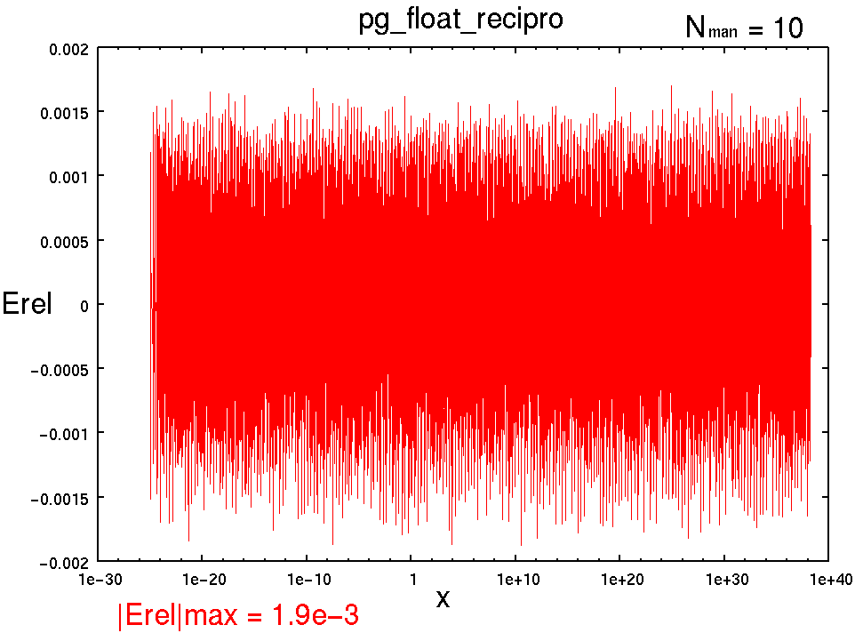
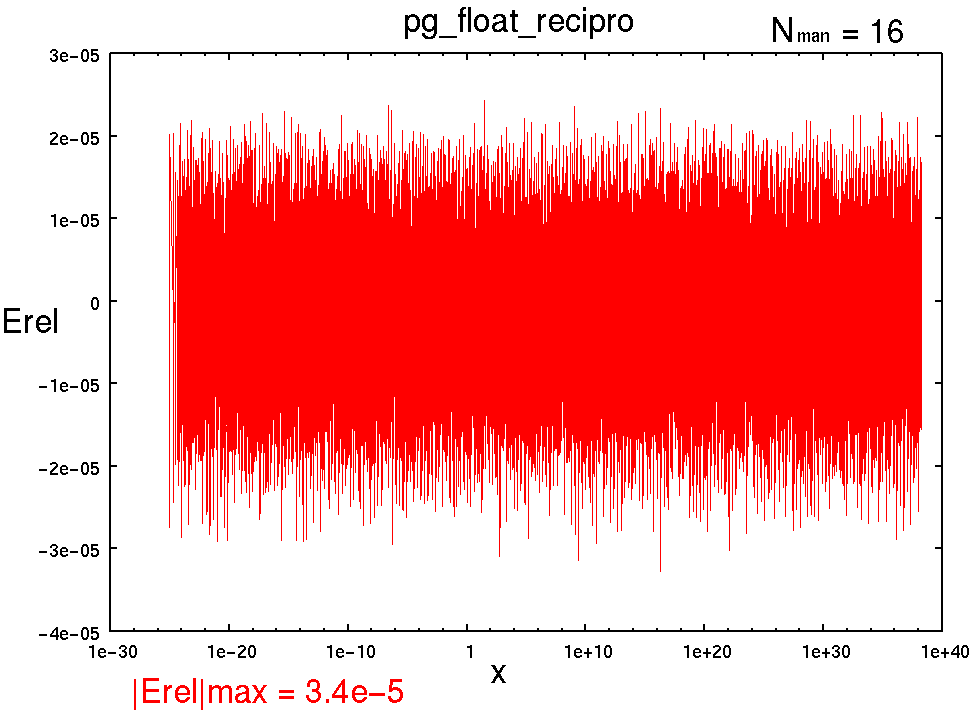
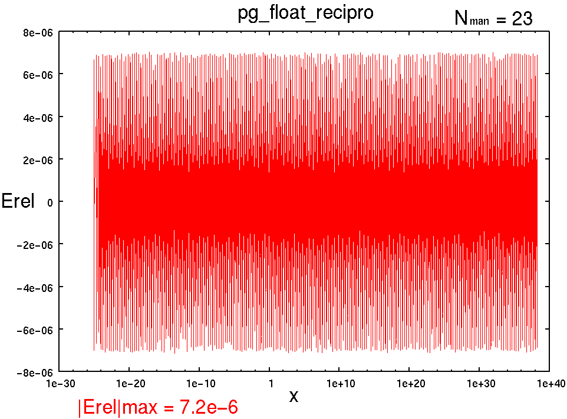

[↑TOP]
pg_float_recipro : 浮動小数点型 符号付 逆数
書式
pg_float_recipro(x, z, NFLO, NMAN, NST);
引数
- x
- : 入力値
- z
- : 演算結果 : 入力の逆数
- NFLO
- : 浮動小数点ワードビット幅
- NMAN
- : 仮数部(精度)ビット幅
- NST
- : パイプラインステージ数
記述例
pg_float_recipro(x, z, 19, 9, 3);
pg_float_recipro(x, z, 26, 16, 3);
pg_float_recipro(x, z, 33, 23, 3);
概要
z = 1.0/x;
つまり, 入力の逆数を計算する.
(注) 仮数部9ビット以下は1st Interpolationにしなければなりませんが
強引に2nd Interpolationにしています.
そんなわけで, 仮数部9ビット以下はちょっと奇妙な回路構成になっています.
(仮数部8ビットより9ビットの方が回路効率が良かったりとか).
仮数部9ビット以下での1st Interpolationのサポートはバージョンアップの時にということでお許しください.
(注) 2nd Interpolation はぎりぎり単精度程度(Nman=21付近)しか精度が出せませんのであしからず.
パイプラインマップ (NMAN21を境に切り替え)
NMAN 21 以下
NST 1 : 1[-], 2[-], 3[-], 4[-], 5[-], 6[-], 7[-], 8[O]
NST 2 : 1[-], 2[O], 3[-], 4[-], 5[-], 6[-], 7[-], 8[O]
NST 3 : 1[-], 2[O], 3[-], 4[O], 5[-], 6[-], 7[-], 8[O]
NST 4 : 1[O], 2[O], 3[-], 4[O], 5[-], 6[-], 7[-], 8[O]
NST 5 : 1[O], 2[O], 3[O], 4[O], 5[-], 6[-], 7[-], 8[O]
NMAN 22 以上
NST 1 : 1[-], 2[-], 3[-], 4[-], 5[-], 6[-], 7[-], 8[O]
NST 2 : 1[-], 2[O], 3[-], 4[-], 5[-], 6[-], 7[-], 8[O]
NST 3 : 1[O], 2[O], 3[-], 4[-], 5[-], 6[-], 7[-], 8[O]
NST 4 : 1[O], 2[O], 3[-], 4[O], 5[-], 6[-], 7[-], 8[O]
NST 5 : 1[O], 2[O], 3[O], 4[O], 5[-], 6[-], 7[-], 8[O]
性能(Xilinx Virtex-II PRO XC2VP70-5FF1517C)
----------------------------------------------------------------------------------------
pg_float_recipro(x, z, 19, 9, NST);
NFLO=19
NMAN= 9
NST, MHz , Cpath, Slices, FFs, LUTs, MULT18X18
1 , 102.020, 0-8 , 43, 19, 74, 1
2 , 123,625, 2-8 , 48, 42, 84, 2
3 , 172.801, 2-4 , 54, 70, 84, 2
4* , 172.801, 2-4 , 76, 109, 84, 2
5 , 240.558, 4-8 , 71, 76, 105, 2
(* : not efficient)
----------------------------------------------------------------------------------------
pg_float_recipro(x, z, 26, 16, NST);
NFLO=26
NMAN=16
NST, MHz , Cpath, Slices, FFs, LUTs, MULT18X18
1 , 59.485, 0-8 , 75, 26, 131, 5
2 , 111.769, 2-8 , 83, 54, 148, 5
3 , 125.834, 0-1 , 86, 96, 148, 5
4 , 150.489, 2-4 , 126, 172, 148, 5
5 , 206.526, 2-3 , 112, 140, 176, 5
----------------------------------------------------------------------------------------
pg_float_recipro(x, z, 33, 23, NST);
NFLO=33
NMAN=23
NST, MHz , Cpath, Slices, FFs, LUTs, MULT18X18
1 , 42.648, 0-8 , 146, 33, 263, 10
2 , 73.828, 0-2 , 159, 68, 291, 10
3 , 86.237, 2-8 , 203, 172, 314, 10
4 , 104.998, 2-4 , 223, 245, 314, 10
5 , 140.371, 3-4 , 221, 259, 349, 10
演算精度 |Erel|max
-
pg_float_recipro(x, z, 20, 10, NST);
|Erel|max = 1.9e-3

-
pg_float_recipro(x, z, 26, 16, NST);
|Erel|max = 3.4e-5

-
pg_float_recipro(x, z, 33, 23, NST);
|Erel|max = 7.2e-6

参照
Change Log
- 2004.10.17 : 単精度のパイプライニング努力. 乗算器4分割対応. 一応格好つけたつもり.
- 2004.10.14 : まだまだちっさくできるはずだけど...
- 2004.10.12 : the first edition by T. Hamada
{kind=link}
{kind=link}
{kind=link}